Demo of the model selection of the GSCA model.
This doc is going to show how to using missing value based cross validation (CV) procedure to perform the model selection of the GSCA model. The GDP penalty is used as an example.
Contents
- Add current folder to the path
- The Simulation of coupled binary and quantitative data sets
- Parameters of the GSCA model
- The selection of a sequence of lambdas
- Model selection based on CV error
- Optimal Bayes error
- RMSEs in estimating simulated 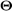 during model selection
- How 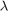 affects the CV error and the RMSE in estimating ?
Add current folder to the path
clear all;
current_fold = pwd;
addpath(genpath(current_fold));
The Simulation of coupled binary and quantitative data sets
We use the logit transform of the empirical marginal probabilities of the binary CNA data set as the simulated offset term to simulate imbalanced binary data 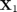. The number of samples, binary variables and quantitative variables are 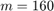, 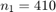, 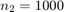 respectively. The noise level 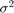 in simulating quantitative data set 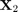 is 1. The simulated low rank is 10. The SNRs in generating and are both 1.
% % import real binary CNA data set load('X1_CNA.mat'); mu1_fixed = logit(mean(X1_CNA,1)); % imbalanced binary data simulation %mu1_fixed = zeros(1,size(X1_CNA,2)); % balanced binary data simulation % simulatation % meaning of the parameters can be found in corresponding m file SNRs = [1,1]; % SRNs in simulating X1 and X2 K = 10; % simulated low rank link = 'logit'; % use logit link %link = 'probit'; % use logit link seed = 1234; % set seed to reproduce the example [X1,X2,Theta_simu,mu_simu,Z_simu,E_simu] = GSCA_data_simulation(mu1_fixed,SNRs,K,link,seed); % size of simulated data sets [m,n1] = size(X1); [~,n2] = size(X2); % plot of the simulated offset term figure plot(mu_simu); title('simulated offset'); xlabel('variables'); % plot of the singular values of true signal and noise figure; plot(svds(Z_simu,K), '-o'); hold on; plot(svds(E_simu,30), '-o'); legend('signal','noise'); title('singular values of signal and noise'); xlabel('component'); ylabel('singular value');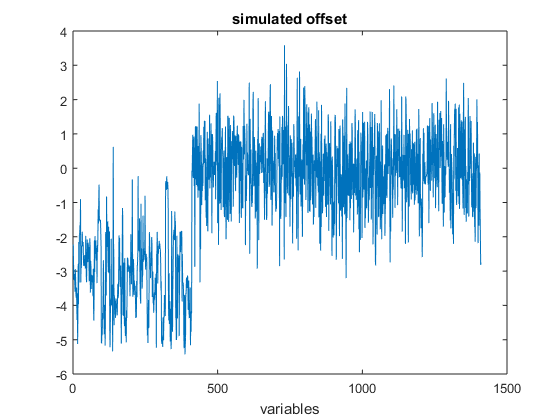 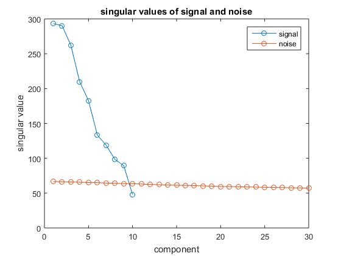
Parameters of the GSCA model
% % parameters for the GSCA model fun = 'GDP'; gamma = 1; % GDP penalty opts.tol_obj = 1e-5; % stopping criteria opts.maxit = 1000; % max number of iterations opts.link = link; % link function opts.gamma = gamma; % tuning parameter
The selection of a sequence of lambdas
We first select a 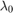, which is large enough to achieve a rank 1 or rank 0 estimation. Then we select a 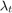, which is small enough that we can achieve a rank 20 or a higher rank estimation. After that, 20 values of $\lambda$s are selected from the interval 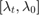 equally in linear space. We evaluate the performance of the GSCA model with the corresponding value of by the CV error.
% % number of lambdas nlambdas = 20; % the selection of lambda0, lambdat [lambda0] = GSCA_softThre_MM_modelSelection_lambda0(X1,X2,fun,opts); [lambdat] = GSCA_softThre_MM_modelSelection_lambdat(X1,X2,fun,lambda0,opts); lambdat = lambdat*0.9; % to cover a slightly wider range lambdas = linspace(lambdat,lambda0,nlambdas);
warning: non convergence; penalty is not strong enougth; non low rank structure is found warning: non convergence; penalty is not strong enougth; non low rank structure is found warning: non convergence; penalty is not strong enougth; non low rank structure is found warning: non convergence; penalty is not strong enougth; non low rank structure is found warning: non convergence; penalty is not strong enougth; non low rank structure is found warning: non convergence; penalty is not strong enougth; non low rank structure is found warning: non convergence; penalty is not strong enougth; non low rank structure is found warning: non convergence; penalty is not strong enougth; non low rank structure is found warning: non convergence; penalty is not strong enougth; non low rank structure is found
Model selection based on CV error
Here, we use 7-fold CV procedure. The meaning of the parameters can be found in the corresponding m file.
% % K-fold CV Kcv = 7; tic; [cvErrors_mat,cvSigSqus_mat,cvRanks_mat] = ... GSCA_softThre_MM_modelSelection(X1,X2,fun,Kcv,lambdas,opts); toc; % the index of minimum mean CV errors [~, min_CV_index] = min(mean(cvErrors_mat,2));
Elapsed time is 504.292845 seconds.
Optimal Bayes error
Bayes error means the scaled negative log-likelihood using the simulated parameters to fit the simulated and .
% % define the loss function according to the link used if strcmp(link,'logit') obj_binary = str2func('obj_f_logistic'); elseif strcmp(link,'probit') obj_binary = str2func('obj_f_probit'); end % Bayes error optimal_error = obj_binary(X1,Theta_simu(:,1:n1)) + ... (1/(2))*norm(X2-Theta_simu(:,(n1+1):end),'fro')^2 ... + m*n2*0.5*log(2*pi); scaled_optimal_error = optimal_error/(m*n1 + m*n2);
RMSEs in estimating simulated during model selection
The RMSE is defined in the paper. The meaning of the parameters in the following section can be found in the corresponding m file.
% [RMSE_mat,RV_mat,sigSqus,ranks,RMSE_ind] = ... GSCA_softThre_MM_modelSelection_RMSEs_simulation(X1,X2,Theta_simu,mu_simu,Z_simu,fun,lambdas,opts);
How affects the CV error and the RMSE in estimating ?
% % log10 transform of the lambdas log_lambdas = log10(lambdas); figure; subplot(1,3,1) errorbar(log_lambdas, mean(cvErrors_mat,2),std(cvErrors_mat,0,2)); hold on; plot(min(log_lambdas):0.01:max(log_lambdas),ones(length(min(log_lambdas):0.01:max(log_lambdas)),1)*scaled_optimal_error,'-r');hold on; plot(log_lambdas(min_CV_index),mean(cvErrors_mat(min_CV_index,:)),'+ r','MarkerSize',10); title('CV error'); xlabel('log_{10}(\lambda)'); ylabel('CV error'); legend('CV error','Bayes error','mimimum') subplot(1,3,2) semilogx(log_lambdas,RMSE_mat(:,1),'-o'); hold on; plot(log_lambdas(min_CV_index), RMSE_mat(min_CV_index,1),'+ r','MarkerSize',10); title('RMSE(\Theta)'); xlabel('log_{10}(\lambda)'); subplot(1,3,3) plot(log_lambdas, mean(cvRanks_mat,2),'-o'); hold on; plot(log_lambdas, ranks,'-og'); hold on; plot(log_lambdas(min_CV_index), mean(cvRanks_mat(min_CV_index,:)),'+ r','MarkerSize',10); title('estimated ranks'); xlabel('log_{10}(\lambda)'); legend('CV','fit')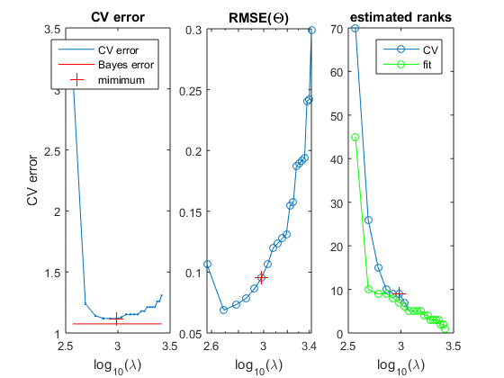